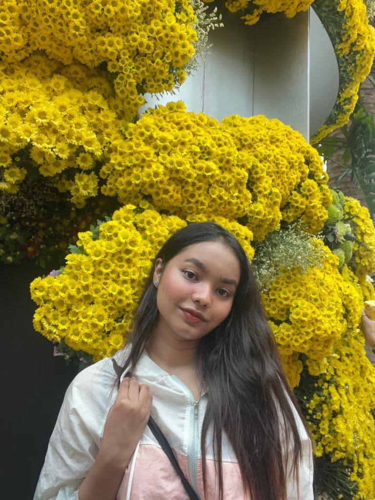

Computer Science Graduate | Human-AI Alignment and Natural Language Processing
I am Lubna Zahan Lamia, currently a Research Assistant at the Cognitive Agents and Interaction Lab (CAIL), University of Dhaka. My research interests broadly span human–computer interaction and natural language processing, with an emphasis on understanding how AI systems—particularly large language models—generate, present, and mediate information in real-world contexts. In my recent work, I have examined model behavior related to meaning, framing, and sentiment, with the goal of better understanding how automated systems influence human interpretation and trust. More generally, I am interested in evaluation and analysis methods that improve transparency and interpretability in AI systems, and in contributing to the development of human-centered and responsible AI technologies across diverse application settings.
Jan 2026 — FinBERT-BiLSTM: A Deep Learning Model for Predicting Volatile Cryptocurrency Market Prices Using Market Sentiment Dynamics has been accepted for publication in the journal Applied Intelligence (Springer).
Feb 2026 — Awarded the University of Dhaka Merit Scholarship based on academic performance in the M.S. in Computer Science and Engineering program.
Email: lubnazahan-2019417808@cs.du.ac.bd | lubnazlamia2020@gmail.com